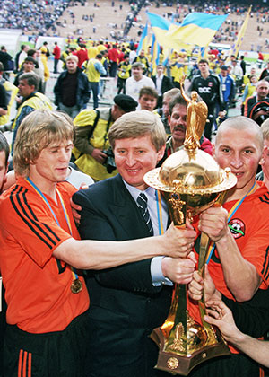
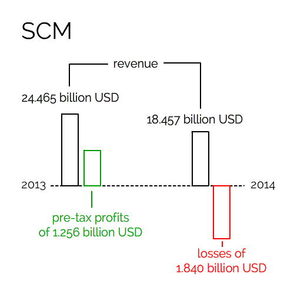

Kingmaker or oligarch on the brink:
Rinat Akhmetov
Rinat Akhmetov is Ukraine’s richest man, running the largest company in that country, System Capital Management (SCM), with a base of employees and business which remain in the separatist region of the Donbass. The largest national investor with 22.7 billion USD in assets in 2014, SCM has created vertically-integrated businesses from ore mining to metallurgy and power generation and supply, as well as media, telecom, retail, farming, finance - and football, with his ownership of Shakhtar Donetsk, which is now based in Kyiv, and plays games in Lviv.
He has made himself indispensable to Ukraine - responsible for much of the nation’s power, food, shopping, banking, TV and leisure.
At first Akhmetov was in direct opposition to the new regime in Donetsk. On 20 May 2014, he called on hundreds of thousands of his workers in Donetsk to “rally against separatists”. They held a “Peace March” in the Donbass Arena, which his holding company owns.
The new Republic asked Akhmetov to pay taxes to the regime, which he refused. Then Chairman of the state council of DPR, Denis Pushilin, announced the Republic would nationalize his assets, “through the will of the people”.
But widescale annexation of SCM’s empire never happened - only the Luhansk People’s Republic took over Akhmetov’s network of petrol stations Parallel.
Akhmetov has been open to both sides of the conflict - satisfying Kyiv by moving his business HQ, himself and his football team from the war-torn region, and paying his taxes. However he has kept open the bulk of his business in the rebel region, where around 70,000 of his staff are still employed.
The 49 year-old ethnic Tartar has also been spending millions of Euro supplying food to the region through his Humanitarian Fund - a crucial lifeline for many when Kyiv stopped paying welfare payments to the separatist region. The fund’s goods are now distributed from the former grounds of Shakhtar Donetsk.

Although nearly everyone we spoke to for this article believes Akhmetov is financing the Republic through taxation, no one has any proof.
Jock Mendoza-Wilson, Director of International and Investor Relations at SCM Holding, says none of the companies in SCM are paying taxes to either of the two Republics.
This would be controversial, because, as the largest business owner in the region, his tax burden would be substantial and Kyiv could accuse him of being the chief financier of terrorism. The Ukrainian secret service made such an allegation against Akhmetov’s business rival, Victor Nusenkis.
Nevertheless there is an irony here. Because nearly all businesses functioning in the Donbass region are paying taxes to the DPR and LPR, to accuse them all of “financing terrorism” would mean locking up anyone owning a private company.